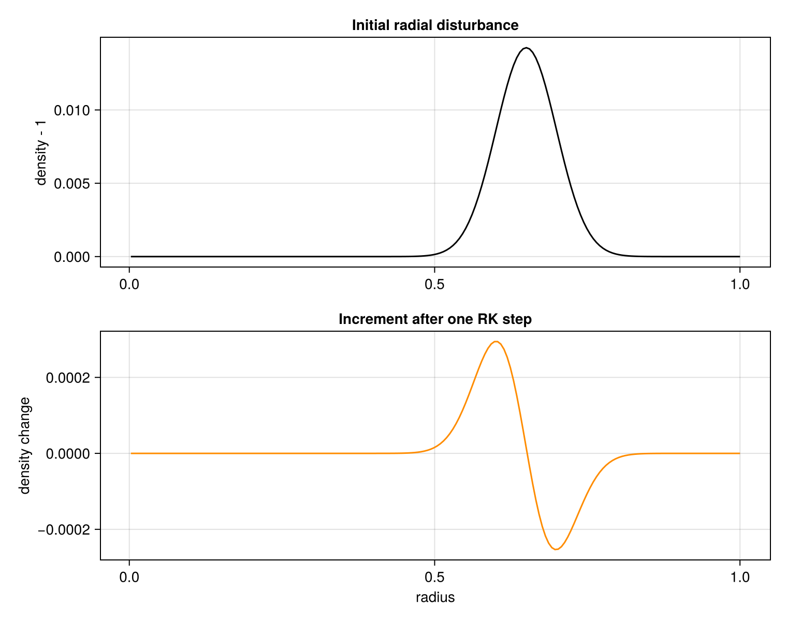

Setting up a radial acoustic pulse
Cylindrical coordinates are useful even when a solution has no angular or axial dependence. With one point in each of those dimensions, CompactLES omits their derivatives but retains the radial geometric terms. The result is an axisymmetric radial calculation at one-dimensional cost. This tutorial sets up a smooth inward-propagating disturbance and advances it by one timestep.
using MPI
MPI.Initialized() || MPI.Init(threadlevel=:funneled)
using CompactLES
using CairoMakie
CairoMakie.activate!(type = "png")Geometry and axis condition
CylindricalMetric interprets coordinates and physical velocity components as $(r,\theta,z)$ and $(u_r, u_\theta, u_z)$. Concentric cylindrical surfaces have different areas, so even an angle-independent radial flux has a divergence proportional to $r^{-1}\partial(r F_r)/\partial r$. This geometry remains active when the angular dimension is collapsed.
The location $r=0$ is a coordinate singularity, but it is not a material wall: a smooth physical field continues through the axis. Imagine extending the radial line to negative $r$. Density and pressure take the same value at $-r$ and $r$ (even parity), while the radial component of a smooth velocity reverses direction (odd parity). AxisBC supplies that symmetry continuation to the compact derivative.
The radial nodes are at $r_i=(i-\tfrac12)\Delta r$. The first node is half a cell from the axis, so the solver never evaluates a stored state at $r=0$. Internally, the parity continuation and the implicit compact stencil are combined into a folded operator; Curvilinear coordinates develops that construction after the physical picture established here.
gamma = 1.4
nr = 192
problem = Problem(
name = "radial acoustic ring",
eos = single_species(gamma = gamma),
metric = CylindricalMetric(),
domain = ((0.0, 1.0), (0.0, 1.0), (0.0, 1.0)),
bcs = ((AxisBC(), SlipWallBC()),
(PeriodicBC(), PeriodicBC()),
(PeriodicBC(), PeriodicBC())),
ic = (r, theta, z) -> begin
ring = exp(-((r - 0.65) / 0.07)^2)
p = 1 + 0.02 * ring
Prim(p = p, rho = p^(1 / gamma), u = (-0.01ring, 0.0, 0.0))
end,
)
numerics = Numerics(
n_global = (nr, 1, 1),
art = ArtParams(enabled = false),
cfl = 0.5,
filter_interval = 0,
)
solver, Q = setup(problem, numerics)(Solver(grid=192 × 1 × 1, t=0.0, step=0, cfl=0.5, metric=CylindricalMetric), ConservedState{Float64}(200 × 1 × 1 × 5))line_profile returns a (coordinate, value) pair. In a cylindrical geometry the first-axis coordinate is the radius, so this reads the density as a function of $r$ directly.
r, density_initial = line_profile(solver, Q, :rho)([0.0026109660574412533, 0.00783289817232376, 0.013054830287206266, 0.018276762402088774, 0.02349869451697128, 0.028720626631853784, 0.033942558746736295, 0.0391644908616188, 0.044386422976501305, 0.04960835509138381 … 0.9530026109660574, 0.95822454308094, 0.9634464751958225, 0.968668407310705, 0.9738903394255874, 0.97911227154047, 0.9843342036553525, 0.989556135770235, 0.9947780678851175, 1.0], [1.0, 1.0, 1.0, 1.0, 1.0, 1.0, 1.0, 1.0, 1.0, 1.0 … 1.0000000001041334, 1.0000000000542872, 1.0000000000279878, 1.0000000000142695, 1.0000000000071947, 1.0000000000035874, 1.000000000001769, 1.0000000000008626, 1.0000000000004161, 1.0000000000001985])Inspect the timestep
dt_report identifies the point and mechanism that limit the global explicit timestep. With the angular and axial dimensions collapsed and no swirl, this case is limited by radial acoustic propagation, not by a vanishing azimuthal cell width.
limit = dt_report(solver, Q)
(; limit.dt, limit.coords, limit.dim, limit.kind)(dt = 0.002182045873097548, coords = (0.6501305483028721, 0.0, 0.0), dim = 1, kind = :acoustic)Advance by the CFL-limited interval reported above. One call to run! still performs all five Runge–Kutta stages; nmax=1 limits the run to one complete timestep and keeps the tutorial cheap.
run!(solver, Q; tfinal = limit.dt, nmax = 1)
_, density_after_one_step = line_profile(solver, Q, :rho)
fig = Figure(size = (760, 600))
ax1 = Axis(fig[1, 1], ylabel = "density - 1",
title = "Initial radial disturbance")
lines!(ax1, r, density_initial .- 1, color = :black)
ax2 = Axis(fig[2, 1], xlabel = "radius", ylabel = "density change",
title = "Increment after one RK step")
lines!(ax2, r, density_after_one_step .- density_initial, color = :darkorange)
linkxaxes!(ax1, ax2)
fig
A resolved angular dimension behaves differently. Its physical spacing is $r\Delta\theta$ and becomes small near the axis, which can impose a much tighter explicit timestep. The present calculation avoids that angular wave propagation because there is no angular derivative, while radial flux-area and curvature terms remain. The next tutorial resolves the angle and introduces the additional antipodal mapping and grid restrictions.
This page was generated using Literate.jl.